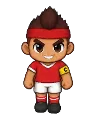

Wiki › Opponents › Tonhão, Rival Captain

Tonhão, Rival Captain
Level 11 Boss Brazil
- Stamina
- ❤️ 520
- Attack
- ⚔️ 30
- XP
- ⭐ 450
- Coins
- 🪙 160–280
- Shoots from afar
- no
- Comes to challenge you
- no
What it drops
| Item | AmountQty | Chance | Rarity |
|---|---|---|---|
| 3–5 | 100% | Common | |
| 1 | 40% | Rare | |
| 1 | 30% | Common | |
| 1 | 30% | Common | |
| 1 | 25% | Common | |
| 🎴Album sticker | 1 | 50% |
How to read: the % is the chance to drop from each opponent you beat. If you are far above its level, the chance goes down (6 to 9 levels above: 80%; 10 to 14: 40%; 15 to 19: 15%; 20 or more: none). An item asked for by a quest you accepted drops at full chance.
Where it appears
- Campinho Village — in the middle of the map
Quests with this opponent
- The Captain's Challenge (Level 8)
- 🐕 A home for Pipoca (Level 14)
What it says
This little pitch is MINE!
Go back to your crib, kiddo!